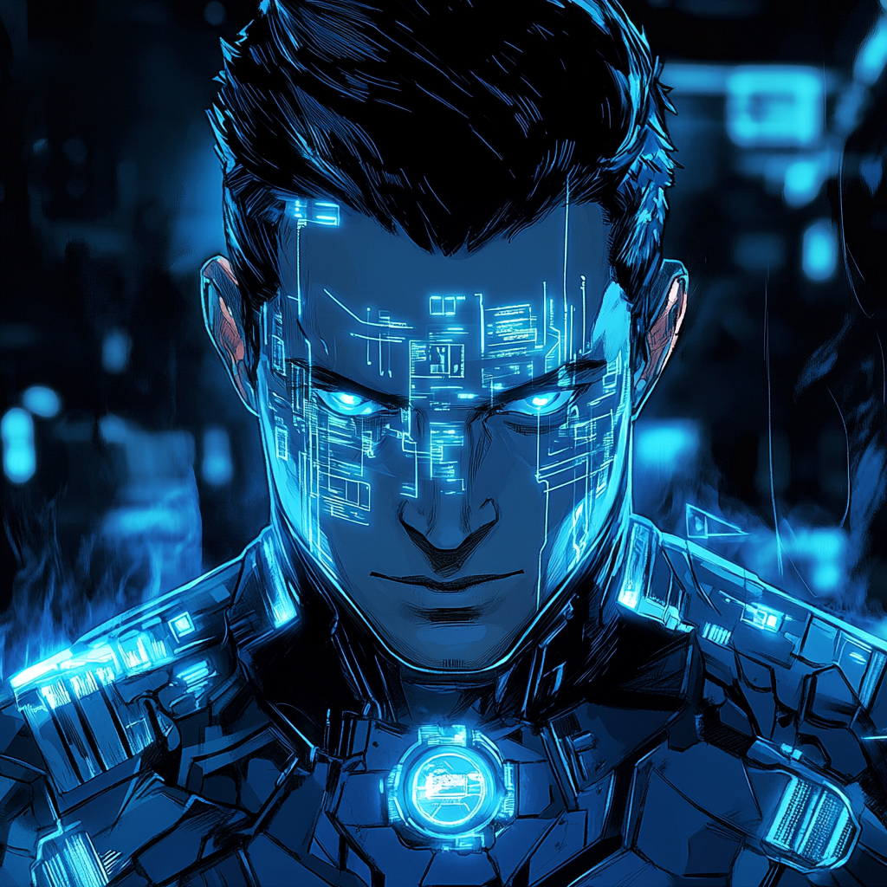

Cipher: Patterns in the Code

Digital Roots In a small convenience store in Allston, young Aiden Park discovered his first computer. His father saved for months to buy it, believing education was survival. While his parents worked long hours, Aiden explored the digital world above their store.
Breaking Convention Aiden defied stereotypes—captain of the basketball team, a programming prodigy, and a social butterfly. MIT recruited him early after he developed quantum encryption techniques that baffled even experts.
The Digital Awakening During an MIT Quantum Security Hackathon, Aiden experienced something impossible. The code transformed before his eyes—patterns emerged where none should exist. His mind expanded, perceiving the digital world at an entirely new level.
Information Overload As his abilities grew, so did the danger. He could see digital networks like living organisms, but the flood of data was overwhelming. Only through meditation and training did he learn to control it, turning his parents' store into a hidden tech hub.
Finding Purpose When Detective Lisa Wong approached him about a trafficking ring using encrypted communications, Aiden cracked their network in hours. This success brought him to the attention of the Boston Avengers Academy.
Present Day Aiden now balances hero work with protecting his community. His parents’ convenience store serves as his base, its systems monitoring Allston while appearing ordinary. Locals trust “Park’s Market” as a safe haven, even if they don’t understand how Aiden helps.
Aiden continues to evolve, spotting threats through probability and pattern recognition before they even form. But he stays grounded—playing basketball, helping his parents, and proving that in a world of superpowers, information itself can be the strongest weapon.